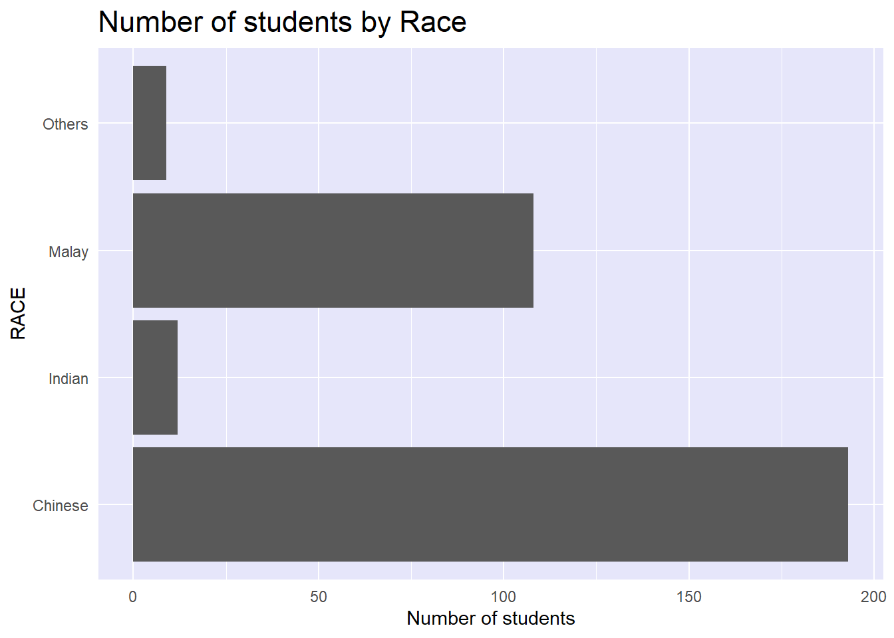
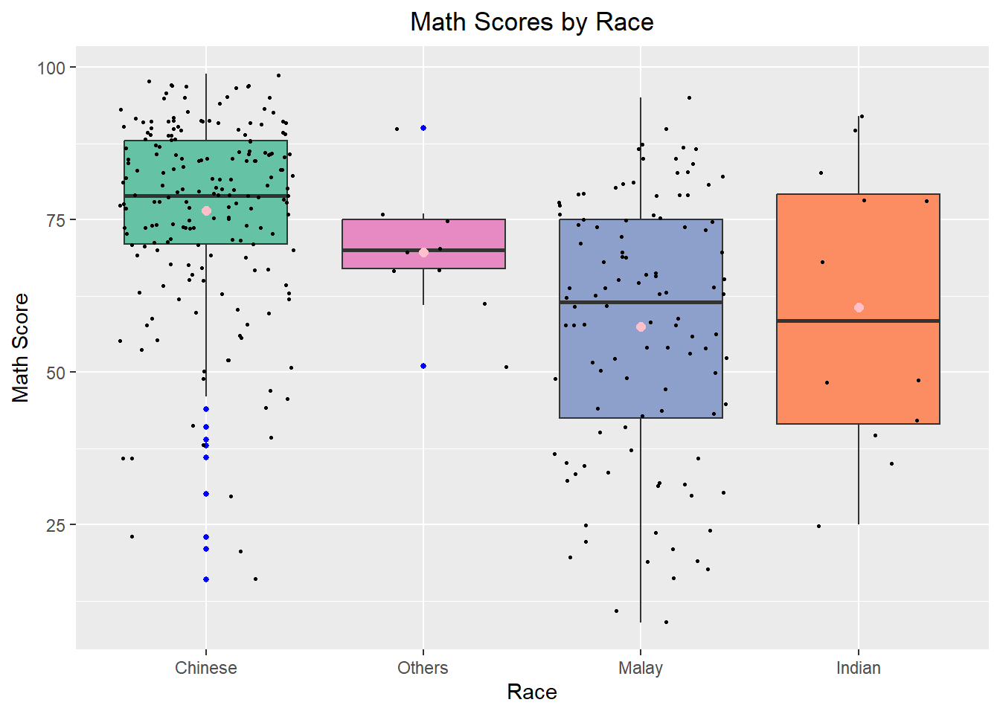

pacman:: p_load(tidyverse)In-class_Ex01
In-class Exercise 1: Programming Elegant DataVis with ggplot2
exam_data <- read_csv("data1/Exam_data.csv")Task 1: Plotting a bar chart
In this section, I will explore the theme_minimal() and change the gridline colours.

ggplot(data=exam_data,
aes(x=RACE)) +
geom_bar() +
coord_flip() +
theme_minimal() +
theme(panel.background = element_rect(fill ='lightblue', color ='black', linetype = 'dotted'),
panel.grid.major = element_line (color= 'red', linetype = 'dotted'),
panel.grid.minor = element_line (colour='green', size= 2, linetype = 'dotted'),
plot.title= element_text(size=rel(2))) +
ggtitle('Number of students by Race') +
labs(y='Number of students')Reference website : R bloggers (How to change the background colour of ggplot2?)
To modify components of a theme , refer to this ggplot2 webpage
Task 2: Improve the data visualisation of an existing simple vertical bar chart
There are several flaws in the design below, namely:
y-axis label is not clear (i.e. count)
To support effective comparison, the bars should be sorted by their respective frequencies.
For static graph, frequency values should be added to provide addition information. (labelled on the graph)
Code
ggplot(data=exam_data,
aes(x=RACE)) +
geom_bar()
The design below is an improvised version with the following features:
Both axes labelled clearly.
Bars are sorted by - count (descending order).
Count and percentage are labelled above the bars.
exam_data %>%
group_by(RACE) %>%
summarise(count = n())# A tibble: 4 × 2
RACE count
<chr> <int>
1 Chinese 193
2 Indian 12
3 Malay 108
4 Others 9THe output of the code below is C,M,I O
t <- exam_data %>%
group_by(RACE) %>%
summarise(count = n())
reorder(t$RACE, (-t$count))[1] Chinese Indian Malay Others
attr(,"scores")
Chinese Indian Malay Others
-193 -12 -108 -9
Levels: Chinese Malay Indian Othersexam_data %>%
group_by(RACE) %>%
summarise(count = n()) %>%
ggplot(aes(x = reorder(RACE, (-count)), y = count)) +
geom_bar(stat = 'identity', color='black', fill = '#DD8888') +
ylim(0,220) +
geom_text(aes(label = paste0(count,', ', round(count/sum(count)*100,1), '%')),
position = position_dodge(width = 0.8), vjust= -1, size = 3.5) +
ggtitle('Distribution of Race') +
labs(y='No. \nof \nPupils', x = 'Race') +
theme(plot.title = element_text(face='bold', hjust = 0.5), #bold title and center-justify
axis.title.y=element_text(angle=0)) Meaning of the argument ‘identity’ in the ‘stat’ parameter:
If we provide the argument stat=“identity” to geom_bar() then we’re telling R to calculate the sum of the y variable, grouped by the x variable and use bars to display the sums
There are three arguments in the reorder() function. (1) categorical variable to be sorted (2) variable to sort (1) by (3) a function that returns numerical value on how to sort (1) by
References:
https://www.roelpeters.be/reorder-ggplot2-bar-chart-by-count/ http://www.sthda.com/english/wiki/ggplot2-barplots-quick-start-guide-r-software-and-data-visualization#bar-plot-with-labels
ggplot(data=exam_data,
aes(x=reorder(RACE,RACE,
function(x)-length(x)))) +
geom_bar() +
ylim(0,220) +
geom_text(stat="count",
aes(label=paste0(..count.., ", ",
round(..count../sum(..count..)*100, 1), "%")),
vjust=-1) +
xlab("Race") +
ylab("No. of\nPupils") +
theme(axis.title.y=element_text(angle = 0))
Output of the code below is C,M,I,Oreorder(exam_data$RACE,exam_data$RACE,function(x)-length(x)) [1] Malay Malay Chinese Chinese Malay Malay Chinese Malay Malay
[10] Indian Chinese Malay Chinese Chinese Chinese Chinese Malay Malay
[19] Malay Malay Malay Malay Chinese Others Malay Malay Malay
[28] Malay Indian Indian Malay Malay Chinese Malay Chinese Malay
[37] Chinese Chinese Malay Chinese Malay Malay Malay Malay Malay
[46] Chinese Chinese Chinese Indian Malay Chinese Chinese Chinese Malay
[55] Chinese Chinese Chinese Malay Chinese Chinese Malay Indian Malay
[64] Chinese Malay Malay Malay Malay Chinese Chinese Malay Malay
[73] Malay Chinese Malay Chinese Malay Malay Malay Indian Malay
[82] Malay Chinese Chinese Malay Indian Chinese Chinese Chinese Chinese
[91] Malay Malay Malay Chinese Chinese Chinese Chinese Malay Malay
[100] Malay Chinese Chinese Chinese Chinese Malay Chinese Chinese Others
[109] Indian Chinese Malay Chinese Malay Malay Chinese Malay Chinese
[118] Chinese Chinese Chinese Malay Malay Malay Chinese Malay Malay
[127] Chinese Chinese Malay Malay Chinese Chinese Chinese Malay Chinese
[136] Chinese Malay Others Malay Chinese Chinese Malay Chinese Chinese
[145] Chinese Malay Chinese Chinese Malay Others Malay Chinese Malay
[154] Malay Chinese Chinese Malay Chinese Others Malay Malay Malay
[163] Malay Chinese Malay Chinese Chinese Others Malay Chinese Chinese
[172] Chinese Chinese Chinese Chinese Chinese Chinese Chinese Chinese Chinese
[181] Malay Chinese Chinese Chinese Chinese Chinese Chinese Chinese Malay
[190] Chinese Chinese Chinese Chinese Chinese Malay Chinese Indian Malay
[199] Chinese Chinese Chinese Chinese Chinese Chinese Chinese Chinese Chinese
[208] Chinese Chinese Chinese Chinese Malay Chinese Chinese Chinese Chinese
[217] Chinese Chinese Malay Chinese Chinese Chinese Chinese Chinese Chinese
[226] Chinese Chinese Chinese Chinese Chinese Malay Chinese Chinese Chinese
[235] Chinese Malay Chinese Chinese Malay Chinese Malay Malay Malay
[244] Chinese Chinese Indian Malay Others Malay Chinese Chinese Chinese
[253] Chinese Chinese Malay Malay Chinese Chinese Chinese Chinese Chinese
[262] Chinese Chinese Malay Chinese Chinese Malay Chinese Chinese Malay
[271] Chinese Malay Chinese Others Chinese Chinese Malay Malay Malay
[280] Chinese Indian Chinese Chinese Chinese Chinese Chinese Malay Chinese
[289] Chinese Chinese Chinese Chinese Malay Chinese Chinese Chinese Chinese
[298] Chinese Malay Malay Chinese Chinese Chinese Chinese Chinese Chinese
[307] Chinese Chinese Chinese Indian Chinese Chinese Malay Chinese Chinese
[316] Chinese Chinese Chinese Others Chinese Chinese Chinese
attr(,"scores")
Chinese Indian Malay Others
-193 -12 -108 -9
Levels: Chinese Malay Indian Othersexam_data %>%
mutate(RACE = fct_infreq(RACE)) %>%
ggplot(aes(x = RACE)) +
geom_bar()+
ylim(0,220) +
geom_text(stat="count",
aes(label=paste0(..count.., ", ",
round(..count../sum(..count..)*100,
1), "%")),
vjust=-1) +
xlab("Race") +
ylab("No. of\nPupils") +
theme(axis.title.y=element_text(angle = 0))
Output of the code below is also C,M,I,Ofct_infreq(exam_data$RACE) [1] Malay Malay Chinese Chinese Malay Malay Chinese Malay Malay
[10] Indian Chinese Malay Chinese Chinese Chinese Chinese Malay Malay
[19] Malay Malay Malay Malay Chinese Others Malay Malay Malay
[28] Malay Indian Indian Malay Malay Chinese Malay Chinese Malay
[37] Chinese Chinese Malay Chinese Malay Malay Malay Malay Malay
[46] Chinese Chinese Chinese Indian Malay Chinese Chinese Chinese Malay
[55] Chinese Chinese Chinese Malay Chinese Chinese Malay Indian Malay
[64] Chinese Malay Malay Malay Malay Chinese Chinese Malay Malay
[73] Malay Chinese Malay Chinese Malay Malay Malay Indian Malay
[82] Malay Chinese Chinese Malay Indian Chinese Chinese Chinese Chinese
[91] Malay Malay Malay Chinese Chinese Chinese Chinese Malay Malay
[100] Malay Chinese Chinese Chinese Chinese Malay Chinese Chinese Others
[109] Indian Chinese Malay Chinese Malay Malay Chinese Malay Chinese
[118] Chinese Chinese Chinese Malay Malay Malay Chinese Malay Malay
[127] Chinese Chinese Malay Malay Chinese Chinese Chinese Malay Chinese
[136] Chinese Malay Others Malay Chinese Chinese Malay Chinese Chinese
[145] Chinese Malay Chinese Chinese Malay Others Malay Chinese Malay
[154] Malay Chinese Chinese Malay Chinese Others Malay Malay Malay
[163] Malay Chinese Malay Chinese Chinese Others Malay Chinese Chinese
[172] Chinese Chinese Chinese Chinese Chinese Chinese Chinese Chinese Chinese
[181] Malay Chinese Chinese Chinese Chinese Chinese Chinese Chinese Malay
[190] Chinese Chinese Chinese Chinese Chinese Malay Chinese Indian Malay
[199] Chinese Chinese Chinese Chinese Chinese Chinese Chinese Chinese Chinese
[208] Chinese Chinese Chinese Chinese Malay Chinese Chinese Chinese Chinese
[217] Chinese Chinese Malay Chinese Chinese Chinese Chinese Chinese Chinese
[226] Chinese Chinese Chinese Chinese Chinese Malay Chinese Chinese Chinese
[235] Chinese Malay Chinese Chinese Malay Chinese Malay Malay Malay
[244] Chinese Chinese Indian Malay Others Malay Chinese Chinese Chinese
[253] Chinese Chinese Malay Malay Chinese Chinese Chinese Chinese Chinese
[262] Chinese Chinese Malay Chinese Chinese Malay Chinese Chinese Malay
[271] Chinese Malay Chinese Others Chinese Chinese Malay Malay Malay
[280] Chinese Indian Chinese Chinese Chinese Chinese Chinese Malay Chinese
[289] Chinese Chinese Chinese Chinese Malay Chinese Chinese Chinese Chinese
[298] Chinese Malay Malay Chinese Chinese Chinese Chinese Chinese Chinese
[307] Chinese Chinese Chinese Indian Chinese Chinese Malay Chinese Chinese
[316] Chinese Chinese Chinese Others Chinese Chinese Chinese
Levels: Chinese Malay Indian OthersThis is the only example not plotting the count but based on another variable ‘MATHS’. is this the reason why we do not need to input any argument in geom_bar()?
ggplot(data = exam_data, aes(x = reorder(RACE, -MATHS, median), y = MATHS)) +
geom_boxplot() +
xlab("Race") +
ylab("Math Score") +
ggtitle("Math Scores by Race") +
theme(plot.title = element_text(hjust = 0.5))reorder(exam_data$RACE, -exam_data$MATHS, median) [1] Malay Malay Chinese Chinese Malay Malay Chinese Malay Malay
[10] Indian Chinese Malay Chinese Chinese Chinese Chinese Malay Malay
[19] Malay Malay Malay Malay Chinese Others Malay Malay Malay
[28] Malay Indian Indian Malay Malay Chinese Malay Chinese Malay
[37] Chinese Chinese Malay Chinese Malay Malay Malay Malay Malay
[46] Chinese Chinese Chinese Indian Malay Chinese Chinese Chinese Malay
[55] Chinese Chinese Chinese Malay Chinese Chinese Malay Indian Malay
[64] Chinese Malay Malay Malay Malay Chinese Chinese Malay Malay
[73] Malay Chinese Malay Chinese Malay Malay Malay Indian Malay
[82] Malay Chinese Chinese Malay Indian Chinese Chinese Chinese Chinese
[91] Malay Malay Malay Chinese Chinese Chinese Chinese Malay Malay
[100] Malay Chinese Chinese Chinese Chinese Malay Chinese Chinese Others
[109] Indian Chinese Malay Chinese Malay Malay Chinese Malay Chinese
[118] Chinese Chinese Chinese Malay Malay Malay Chinese Malay Malay
[127] Chinese Chinese Malay Malay Chinese Chinese Chinese Malay Chinese
[136] Chinese Malay Others Malay Chinese Chinese Malay Chinese Chinese
[145] Chinese Malay Chinese Chinese Malay Others Malay Chinese Malay
[154] Malay Chinese Chinese Malay Chinese Others Malay Malay Malay
[163] Malay Chinese Malay Chinese Chinese Others Malay Chinese Chinese
[172] Chinese Chinese Chinese Chinese Chinese Chinese Chinese Chinese Chinese
[181] Malay Chinese Chinese Chinese Chinese Chinese Chinese Chinese Malay
[190] Chinese Chinese Chinese Chinese Chinese Malay Chinese Indian Malay
[199] Chinese Chinese Chinese Chinese Chinese Chinese Chinese Chinese Chinese
[208] Chinese Chinese Chinese Chinese Malay Chinese Chinese Chinese Chinese
[217] Chinese Chinese Malay Chinese Chinese Chinese Chinese Chinese Chinese
[226] Chinese Chinese Chinese Chinese Chinese Malay Chinese Chinese Chinese
[235] Chinese Malay Chinese Chinese Malay Chinese Malay Malay Malay
[244] Chinese Chinese Indian Malay Others Malay Chinese Chinese Chinese
[253] Chinese Chinese Malay Malay Chinese Chinese Chinese Chinese Chinese
[262] Chinese Chinese Malay Chinese Chinese Malay Chinese Chinese Malay
[271] Chinese Malay Chinese Others Chinese Chinese Malay Malay Malay
[280] Chinese Indian Chinese Chinese Chinese Chinese Chinese Malay Chinese
[289] Chinese Chinese Chinese Chinese Malay Chinese Chinese Chinese Chinese
[298] Chinese Malay Malay Chinese Chinese Chinese Chinese Chinese Chinese
[307] Chinese Chinese Chinese Indian Chinese Chinese Malay Chinese Chinese
[316] Chinese Chinese Chinese Others Chinese Chinese Chinese
attr(,"scores")
Chinese Indian Malay Others
-79.0 -58.5 -61.5 -70.0
Levels: Chinese Others Malay IndianTask 3: Redesign the data viz of a histogram
There are several flaws in the design below, namely:
The outline of the bars is unclear
Unable to see how the scores are binned
Addition of reference line (e.g. 75th percentile) will help users get a better understanding of the data.
Code
ggplot(data=exam_data,
aes(x=MATHS)) +
geom_histogram(binwidth=5)
The designs below are improvised version with the following features:
Makeover 1:
- Includes the 50th and 75th percentile line in the plot.
Makeover 2:
Adding mean and median lines on the histogram plot.
Change fill color and line color
Reference: link
q <- quantile(exam_data$MATHS, probs = c(0.25, 0.5, 0.75))
ggplot(data=exam_data,
aes(x=MATHS)) +
geom_histogram(binwidth = 5, color='black',size= 0.3, fill = '#DD8888') +
geom_vline(xintercept = q[2], linetype='dotted', size = 0.8, color='blue') +
geom_vline(xintercept = q[3], linetype='dotted', size = 0.8) +
annotate('text' , x= 70, y=50, label='50th \npercentile', size = 3) +
annotate('text' , x= 90, y=50, label='75th \npercentile', size = 3) +
labs(y= 'No. of \nPupils', x='math Score') +
theme(axis.title.y=element_text(angle = 0)) +
ggtitle('Distribution of Math scores')ggplot(data=exam_data,
aes(x= MATHS)) +
geom_histogram(bins=20,
color="black",
fill="light blue") +
geom_vline(aes(xintercept = mean(MATHS, na.rm=T)),
color='red',
linetype = 'dashed',
size = 1) +
annotate("text", x=65, y=50, label="mean", angle=0, size = 4) +
geom_vline(aes(xintercept = median(MATHS, na.rm=T)),
color='gray30',
linetype = 'dashed',
size = 1) +
annotate("text", x=79, y=50, label="median", angle=0, size = 4)